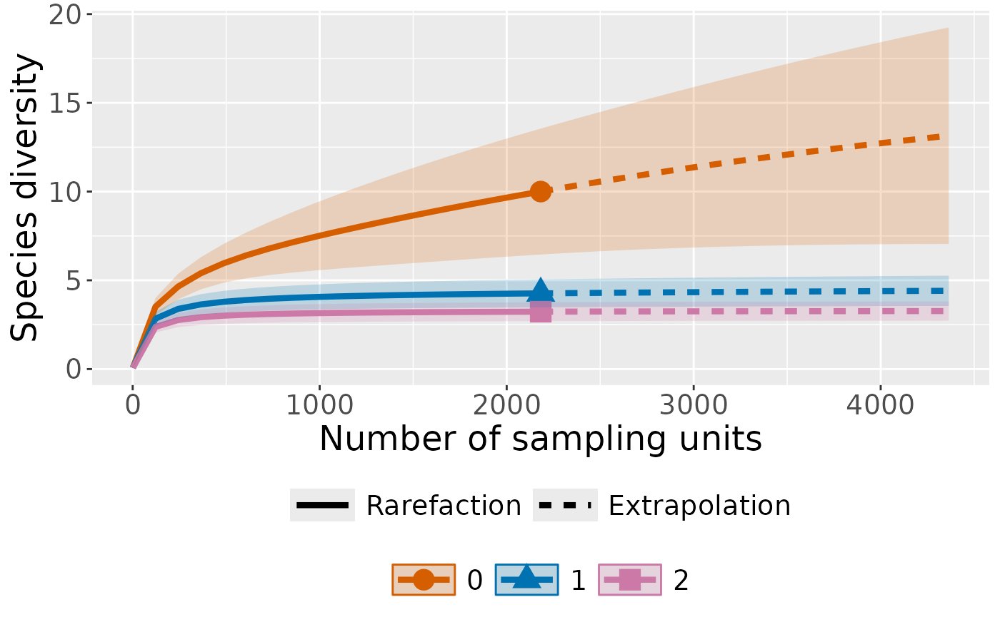
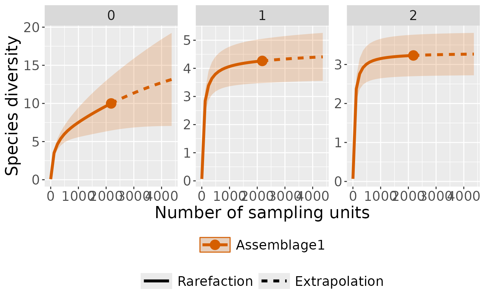
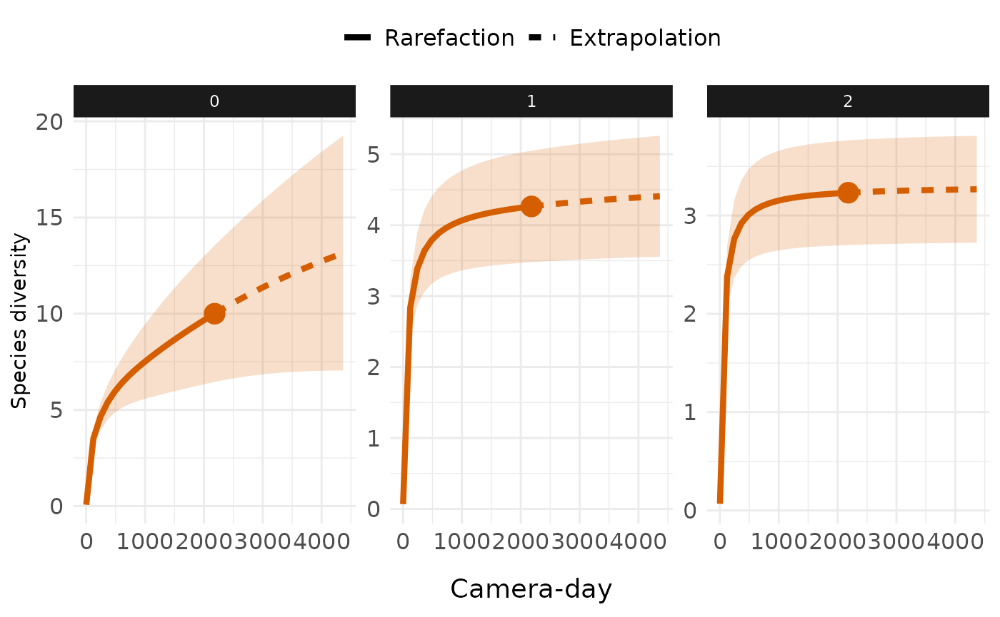

Rarefaction and Interpolation of Species Diversity Estimation with Camera Trap Data using ct R package
Source:vignettes/articles/rarefaction_and_extrapolation.Rmd
rarefaction_and_extrapolation.RmdSpecies diversity estimation is a fundamental aspect of camera trap
ecology, but comparing diversity across sites with different sampling
efforts can be challenging. The ct package provides a
solution by implementing interpolation and extrapolation framework
specifically designed for camera trap data.
Understanding Rarefaction and Extrapolation
Rarefaction downscales diversity estimates to a common, smaller sample size, answering the question: “How many species would we expect if we had sampled less intensively?” This technique helps compare diversity between well-sampled and poorly-sampled sites on equal footing.
Extrapolation projects diversity estimates beyond the observed sample size, addressing: “How many species would we detect with additional sampling effort?” This is particularly valuable for estimating total community diversity and planning future sampling efforts.
Hill Numbers
The function estimates diversity using Hill numbers, which provide a mathematically unified approach to measuring biodiversity:
- q = 0 (Species Richness): Total number of species, giving equal weight to all species regardless of abundance
- q = 1 (Shannon Diversity): Exponential of Shannon entropy, emphasizing common species
- q = 2 (Simpson Diversity): Inverse of Simpson concentration, focusing on dominant species
This allows to understand how diversity patterns change when rare versus common species are emphasized.
Application with ct R package
We next describe the main function ct_inext() with its
default arguments.
ct_inext(data, species_column,
site_column, size_column,
strata_column = NULL, diversity_order = 0,
sample_size = NULL, endpoint = NULL,
knots = 40, n_bootstrap = 100)The arguments of this function are briefly described here and can be
further explored using illustrative examples. The function computes
incidence-frequency diversity estimates of order q
(diversity_order = q), along with sample coverage estimates and
related statistics, for K evenly spaced knots (if
knots = K). Each knot corresponds to a standardized number
of sampling units for which diversity estimates are calculated. By
default, endpoint is set to twice the reference sample size
(i.e., twice the total number of sampling units). For example, if
endpoint = 10 and knots = 4, diversity
estimates will be computed for a sequence of sample sizes
(1, 4, 7, 10). If strata_column is provided,
the function repeats this process separately for each stratum, allowing
comparisons among groups (e.g., habitats or treatments). Bootstrap
resampling is performed n_bootstrap times to obtain
standard errors and 95% confidence intervals for diversity and coverage
estimates.
Workflow Example
Let’s walk through a complete analysis using camera trap data from
the ct package:
Data Preparation
library(ct)
library(dplyr)
# Import and prepare camera trap data
camdata1 <- read.csv(ct:::table_files()[1]) %>%
dplyr::mutate(site = "pene") %>%
# Remove consecutive detections of the same species within 60 seconds
ct_independence(species_column = species,
site_column = camera,
datetime = datetimes,
threshold = 60,
format = "%Y-%m-%d %H:%M:%S",
only = TRUE)
head(camdata1)
#> # A tibble: 6 × 17
#> project camera species image_name number Make Model FOV dates times
#> <chr> <chr> <chr> <chr> <int> <chr> <chr> <dbl> <chr> <chr>
#> 1 Last CAMERA 1 Canis adustus DSCF0017.… 1 Gard… A3S 47.4 3/24… 22:0…
#> 2 Last CAMERA 1 Canis adustus DSCF0045.… 1 Gard… A3S 47.4 3/27… 0:30…
#> 3 Last CAMERA 1 Canis adustus DSCF0057.… 1 Gard… A3S 47.4 3/27… 0:33…
#> 4 Last CAMERA 1 Canis adustus DSCF0061.… 1 Gard… A3S 47.4 3/27… 1:21…
#> 5 Last CAMERA 1 Canis adustus DSCF0065.… 1 Gard… A3S 47.4 3/27… 1:27…
#> 6 Last CAMERA 1 Canis adustus DSCF0081.… 1 Gard… A3S 47.4 3/27… 22:2…
#> # ℹ 7 more variables: FocalLength <dbl>, diel <dbl>, datetime <dttm>,
#> # longitude <int>, latitude <int>, radian <dbl>, site <chr>Create Daily Sampling Units
Camera trap analysis typically requires converting detection records into standardized sampling units. We use camera-days as our sampling units:
# Aggregate data to daily detection records per camera
camday <- ct_camera_day(
data = camdata1,
deployment_column = camera,
datetime_column = datetime,
species_column = species,
size_column = number
)
camday
#> # A tibble: 21,820 × 5
#> camera date species number sampling_unit
#> <chr> <date> <chr> <int> <chr>
#> 1 CAMERA 1 2024-03-24 Canis adustus 1 CAMERA 120240324
#> 2 CAMERA 1 2024-03-24 Chlorocebus aethiops 0 CAMERA 120240324
#> 3 CAMERA 1 2024-03-24 Erythrocebus patas 1 CAMERA 120240324
#> 4 CAMERA 1 2024-03-24 Genetta genetta 0 CAMERA 120240324
#> 5 CAMERA 1 2024-03-24 Lepus crawshayi 0 CAMERA 120240324
#> 6 CAMERA 1 2024-03-24 Mellivora capensis 0 CAMERA 120240324
#> 7 CAMERA 1 2024-03-24 Sylvicapra grimmia 0 CAMERA 120240324
#> 8 CAMERA 1 2024-03-24 Syncerus caffer 1 CAMERA 120240324
#> 9 CAMERA 1 2024-03-24 Thryonomys swinderianus 0 CAMERA 120240324
#> 10 CAMERA 1 2024-03-24 Tragelaphus scriptus 0 CAMERA 120240324
#> # ℹ 21,810 more rowsThis creates a dataset where each row represents one day of sampling at one camera location, with species detection counts for that day.
Diversity Analysis
Now we can interpolate and extrapolate diversity trend across Hill number orders:
# Run rarefaction and extrapolation analysis
int_ext <- ct_inext(data = camday,
diversity_order = c(0, 1, 2),
species_column = species,
site_column = sampling_unit,
size_column = number,
knots = 40,
n_bootstrap = 50)
#> Warning in Fun(x, q, "Assemblage1"): Insufficient data to provide reliable
#> estimators and associated s.e.There are several things to explain about the output of the function, which is presented as follows:
#> Compare 1 assemblages with Hill number order q = 0, 1, 2.
#> $class: iNEXT
#>
#> $DataInfo: basic data information
#> Assemblage T U S.obs SC Q1 Q2 Q3 Q4 Q5 Q6 Q7 Q8 Q9 Q10
#> 1 site.1 2182 148 10 0.973 4 1 0 0 0 1 0 0 0 0
#>
#> $iNextEst: diversity estimates with rarefied and extrapolated samples.
#> $size_based (LCL and UCL are obtained for fixed size.)
#>
#> Assemblage t Method Order.q qD qD.LCL qD.UCL
#> 1 Assemblage1 1 Rarefaction 0 0.06782768 0.05549376 0.0801616
#> 10 Assemblage1 1091 Rarefaction 0 7.73388404 5.65183611 9.8159320
#> 20 Assemblage1 2182 Observed 0 10.00000000 6.45278453 13.5472155
#> 30 Assemblage1 3216 Extrapolation 0 11.68742261 6.90948356 16.4653617
#> 40 Assemblage1 4364 Extrapolation 0 13.14714588 7.04674821 19.2475435
#> 41 Assemblage1 1 Rarefaction 1 0.06782768 0.05549376 0.0801616
#> 50 Assemblage1 1091 Rarefaction 1 4.09322273 3.37870474 4.8077407
#> 60 Assemblage1 2182 Observed 1 4.26415736 3.47825185 5.0500629
#> 70 Assemblage1 3216 Extrapolation 1 4.34598713 3.52332286 5.1686514
#> 80 Assemblage1 4364 Extrapolation 1 4.40797808 3.55577337 5.2601828
#> 81 Assemblage1 1 Rarefaction 2 0.06782768 0.05549376 0.0801616
#> 90 Assemblage1 1091 Rarefaction 2 3.16396450 2.65383192 3.6740971
#> 100 Assemblage1 2182 Observed 2 3.23163175 2.69947555 3.7637880
#> 110 Assemblage1 3216 Extrapolation 2 3.25400711 2.71438537 3.7936288
#> 120 Assemblage1 4364 Extrapolation 2 3.26656250 2.72271162 3.8104134
#> SC SC.LCL SC.UCL
#> 1 0.0205398 0.01541636 0.02566324
#> 10 0.9648520 0.93976793 0.98993597
#> 20 0.9729792 0.95053086 0.99542748
#> 30 0.9786812 0.95671169 1.00000000
#> 40 0.9836139 0.96413600 1.00000000
#> 41 0.0205398 0.01541636 0.02566324
#> 50 0.9648520 0.93976793 0.98993597
#> 60 0.9729792 0.95053086 0.99542748
#> 70 0.9786812 0.95671169 1.00000000
#> 80 0.9836139 0.96413600 1.00000000
#> 81 0.0205398 0.01541636 0.02566324
#> 90 0.9648520 0.93976793 0.98993597
#> 100 0.9729792 0.95053086 0.99542748
#> 110 0.9786812 0.95671169 1.00000000
#> 120 0.9836139 0.96413600 1.00000000
#>
#> NOTE: The above output only shows five estimates for each assemblage; call iNEXT.object$iNextEst$size_based to view complete output.
#>
#> $coverage_based (LCL and UCL are obtained for fixed coverage; interval length is wider due to varying size in bootstraps.)
#>
#> Assemblage SC t Method Order.q qD qD.LCL
#> 1 Assemblage1 0.02053992 1 Rarefaction 0 0.06782807 0.05767988
#> 10 Assemblage1 0.96485195 1091 Rarefaction 0 7.73388398 1.28040548
#> 20 Assemblage1 0.97297917 2182 Observed 0 10.00000000 1.93391465
#> 30 Assemblage1 0.97868123 3216 Extrapolation 0 11.68742261 2.59890626
#> 40 Assemblage1 0.98361385 4364 Extrapolation 0 13.14714588 3.06307696
#> 41 Assemblage1 0.02053992 1 Rarefaction 1 0.06782807 0.05769723
#> 50 Assemblage1 0.96485195 1091 Rarefaction 1 4.09322273 3.15250792
#> 60 Assemblage1 0.97297917 2182 Observed 1 4.26415736 3.29986732
#> 70 Assemblage1 0.97868123 3216 Extrapolation 1 4.34598713 3.39142092
#> 80 Assemblage1 0.98361385 4364 Extrapolation 1 4.40797808 3.46044406
#> 81 Assemblage1 0.02053992 1 Rarefaction 2 0.06782807 0.05772344
#> 90 Assemblage1 0.96485195 1091 Rarefaction 2 3.16396449 2.59647057
#> 100 Assemblage1 0.97297917 2182 Observed 2 3.23163175 2.66031200
#> 110 Assemblage1 0.97868123 3216 Extrapolation 2 3.25400711 2.69131604
#> 120 Assemblage1 0.98361385 4364 Extrapolation 2 3.26656250 2.71129307
#> qD.UCL
#> 1 0.07797626
#> 10 14.18736249
#> 20 18.06608535
#> 30 20.77593896
#> 40 23.23121479
#> 41 0.07795892
#> 50 5.03393753
#> 60 5.22844741
#> 70 5.30055334
#> 80 5.35551211
#> 81 0.07793269
#> 90 3.73145842
#> 100 3.80295150
#> 110 3.81669818
#> 120 3.82183193
#>
#> NOTE: The above output only shows five estimates for each assemblage; call iNEXT.object$iNextEst$coverage_based to view complete output.
#>
#> $AsyEst: asymptotic diversity estimates along with related statistics.
#> Observed Estimator Est_s.e. 95% Lower 95% Upper
#> Species Richness 10.000000 17.996334 7.3307086 3.628409 32.364258
#> Shannon diversity 4.264157 4.532674 0.4064015 3.736142 5.329207
#> Simpson diversity 3.231632 3.302261 0.2402749 2.831331 3.773191Understanding the Output
The ct_inext() function returns a iNEXT object with
three main components: DataInfo, iNextEst, and
AsyEst
i. DataInfo: Basic Community Information
This table provides essential community structure information:
- T: Total number of sampling units (2,182 camera-days)
- U: Total number of individuals detected (148 detections)
- S.obs: Observed species richness (10 species)
- SC: Sample coverage (97.3% - indicates sampling completeness)
- Q1-Q10: First ten incidence frequency counts (e.g., detection of the species in 4 camera trap)
The high sample coverage (97.3%) suggests our sampling captured most of the species present in the community.
ii. iNextEst: Diversity Curves
The $iNextEst element of the output consists of two data
frames: $size_based and $coverage_based. The
$size_based data frame provides results for each of the 40
interpolation and extrapolation knots (sample sizes). For each knot, it
reports the assemblage name, the sample size (m), and the
method used (Rarefaction, Observed, or Extrapolation, depending on
whether m is smaller than, equal to, or larger than the
reference sample size). It also includes the diversity order
(order.q), the estimated diversity (qD), its 95%
confidence interval (qD.LCL and qD.UCL), and the
corresponding sample coverage estimate (SC) along with its 95%
confidence limits (SC.LCL and SC.UCL). These coverage
estimates and confidence intervals are used to generate the sample
completeness curve.
int_ext$iNextEst$size_based %>%
dplyr::slice_sample(prop = 0.15) # Sample 15% of rows
#> Assemblage t Method Order.q qD qD.LCL qD.UCL
#> 1 Assemblage1 1817 Rarefaction 2 3.21780739 2.69021811 3.7453967
#> 2 Assemblage1 3904 Extrapolation 0 12.60789672 7.02541054 18.1903829
#> 3 Assemblage1 2871 Extrapolation 1 4.32191612 3.51027631 5.1335559
#> 4 Assemblage1 606 Rarefaction 2 3.06135913 2.58304900 3.5396693
#> 5 Assemblage1 243 Rarefaction 0 4.64720825 3.92567958 5.3687369
#> 6 Assemblage1 4249 Extrapolation 1 4.40283387 3.55315932 5.2525084
#> 7 Assemblage1 3330 Extrapolation 1 4.35332054 3.52725509 5.1793860
#> 8 Assemblage1 2871 Extrapolation 0 11.16823550 6.80114788 15.5353231
#> 9 Assemblage1 3101 Extrapolation 1 4.33828555 3.51917100 5.1574001
#> 10 Assemblage1 4249 Extrapolation 0 13.01761652 7.04481677 18.9904163
#> 11 Assemblage1 1696 Rarefaction 0 9.05942507 6.11433729 12.0045128
#> 12 Assemblage1 122 Rarefaction 2 2.37424050 2.06285421 2.6856268
#> 13 Assemblage1 1212 Rarefaction 0 8.01646774 5.74921988 10.2837156
#> 14 Assemblage1 1 Rarefaction 1 0.06782768 0.05549376 0.0801616
#> 15 Assemblage1 4364 Extrapolation 1 4.40797808 3.55577337 5.2601828
#> 16 Assemblage1 122 Rarefaction 0 3.51417715 3.02217604 4.0061783
#> 17 Assemblage1 606 Rarefaction 1 3.88750364 3.24201163 4.5329956
#> 18 Assemblage1 1696 Rarefaction 2 3.21194719 2.68628335 3.7376110
#> SC SC.LCL SC.UCL
#> 1 0.9707125 0.94855277 0.99287221
#> 2 0.9817916 0.96120284 1.00000000
#> 3 0.9769268 0.95451141 0.99934222
#> 4 0.9501860 0.92079918 0.97957284
#> 5 0.8925114 0.86064831 0.92437442
#> 6 0.9831762 0.96341324 1.00000000
#> 7 0.9792311 0.95745329 1.00000000
#> 8 0.9769268 0.95451141 0.99934222
#> 9 0.9781118 0.95596928 1.00000000
#> 10 0.9831762 0.96341324 1.00000000
#> 11 0.9699462 0.94763044 0.99226193
#> 12 0.8142276 0.76634492 0.86211020
#> 13 0.9662391 0.94197884 0.99049929
#> 14 0.0205398 0.01541636 0.02566324
#> 15 0.9836139 0.96413600 1.00000000
#> 16 0.8142276 0.76634492 0.86211020
#> 17 0.9501860 0.92079918 0.97957284
#> 18 0.9699462 0.94763044 0.99226193The $coverage_based data frame provides results
standardized by sample coverage rather than sample size. For each
coverage level, it reports the assemblage name, the standardized sample
coverage (SC), and the corresponding sample size (m)
required to achieve that coverage (based on the 40 rarefaction and
extrapolation knots). It also specifies the method (Rarefaction,
Observed, or Extrapolation, depending on whether SC is lower
than, equal to, or higher than the reference sample coverage), the
diversity order (order.q), the diversity estimate
(qD), and its 95% confidence interval (qD.LCL and
qD.UCL). These coverage-based diversity estimates and
confidence intervals are used to construct the coverage-based
rarefaction/extrapolation (R/E) curves.
int_ext$iNextEst$coverage_based %>%
dplyr::slice_sample(prop = 0.15) # Sample 15% of rows
#> Assemblage SC t Method Order.q qD qD.LCL
#> 1 Assemblage1 0.98226537 4019 Extrapolation 2 3.26353436 2.70476727
#> 2 Assemblage1 0.98179165 3904 Extrapolation 2 3.26240749 2.70287541
#> 3 Assemblage1 0.81422757 122 Rarefaction 0 3.51417722 2.76345678
#> 4 Assemblage1 0.95643633 727 Rarefaction 1 3.95904302 3.08373839
#> 5 Assemblage1 0.96623906 1212 Rarefaction 1 4.12325291 3.17645120
#> 6 Assemblage1 0.89251137 243 Rarefaction 1 3.38854773 2.72370396
#> 7 Assemblage1 0.97868123 3216 Extrapolation 2 3.25400711 2.69131604
#> 8 Assemblage1 0.98272676 4134 Extrapolation 0 12.88462723 2.96024949
#> 9 Assemblage1 0.98272676 4134 Extrapolation 1 4.39747745 3.44560102
#> 10 Assemblage1 0.96994619 1696 Rarefaction 0 9.05942515 1.58936781
#> 11 Assemblage1 0.98179165 3904 Extrapolation 1 4.38609256 3.43212598
#> 12 Assemblage1 0.97436686 2412 Extrapolation 1 4.28501287 3.31986339
#> 13 Assemblage1 0.97071249 1817 Rarefaction 0 9.30294984 1.67539080
#> 14 Assemblage1 0.97298536 2183 Extrapolation 2 3.23166341 2.66034647
#> 15 Assemblage1 0.96994619 1696 Rarefaction 2 3.21194719 2.63938296
#> 16 Assemblage1 0.02053992 1 Rarefaction 1 0.06782807 0.05769723
#> 17 Assemblage1 0.97752710 2986 Extrapolation 2 3.25034905 2.68445848
#> 18 Assemblage1 0.98272676 4134 Extrapolation 2 3.26459926 2.70676993
#> qD.UCL
#> 1 3.82230146
#> 2 3.82193956
#> 3 4.26489765
#> 4 4.83434765
#> 5 5.07005463
#> 6 4.05339150
#> 7 3.81669818
#> 8 22.80900498
#> 9 5.34935387
#> 10 16.52948249
#> 11 5.34005913
#> 12 5.25016235
#> 13 16.93050889
#> 14 3.80298035
#> 15 3.78451142
#> 16 0.07795892
#> 17 3.81623962
#> 18 3.82242859Note that in this example, we do not have a specific assemblage or
site. Here, “Assemblage” refers to the different strata levels (for
example, habitat types such as “Savanna,” “Forest,” etc.) where the
sampling took place. If nothing is provided (i.e.,
strata_column = NULL) in the ct_inext()
function, the “Assemblage” column will simply contain the same value —
“Assemblage1” for all coverage levels.
iii. AsyEst: Asymptotic Estimates
The $AsyEst element summarizes the asymptotic diversity estimates for each assemblage. It reports the assemblage name, the type of diversity (species richness for q = 0, Shannon diversity for q = 1, and Simpson diversity for q = 2), the observed diversity, the estimated asymptotic diversity value, its standard error, and the associated 95% confidence interval (lower and upper limits). These asymptotic estimates are calculated using appropriate functions for each diversity order, providing an estimate of the expected diversity if sampling were exhaustive.
Visualization with ct_plot_inext()
The ct_plot_inext() transforms rarefaction and
extrapolation results into customizable visualizations, enabling
intuitive interpretation. It supports three main plot types:
type = 1 (sample-size-based curves) showing how
diversity accumulates with increased sampling effort, type =
2 (sample completeness curves) illustrating the relationship
between sample size and coverage to assess sampling adequacy, and
type = 3 (coverage-based curves) standardizing
diversity comparisons by completeness for more ecologically meaningful
contrasts. Users can customize plots with facet_var to
split panels by assemblage, diversity order, or both, and with
color_var to color-code curves by assemblage, diversity
order, both, or not at all—offering flexible options for comparing
sites, treatments, or diversity measures visually.
Plot with curves colored by order
ct_plot_inext(int_ext, type = 1, color_var = "Order.q")
#> Warning: `aes_string()` was deprecated in ggplot2 3.0.0.
#> ℹ Please use tidy evaluation idioms with `aes()`.
#> ℹ See also `vignette("ggplot2-in-packages")` for more information.
#> ℹ The deprecated feature was likely used in the iNEXT package.
#> Please report the issue at <https://github.com/AnneChao/iNEXT/issues>.
#> This warning is displayed once every 8 hours.
#> Call `lifecycle::last_lifecycle_warnings()` to see where this warning was
#> generated.
Plot with curves faceted by order
ct_plot_inext(int_ext, type = 1, facet_var = "Order.q")
#> Warning in ggiNEXT.iNEXT(x = inext_object, type = type, se = se, facet.var =
#> facet_var, : invalid color.var setting, the iNEXT object do not consist
#> multiple assemblages, change setting as Order.q
Customize with ggplot2
library(ggplot2)
ct_plot_inext(int_ext, type = 1, facet_var = "Order.q")+
# Remove assemblage legend
guides(color = "none", shape = "none", fill = "none")+
# Change axis title x
labs(x = "Camera-day")+
theme_minimal()+
theme(
# Change strip style
strip.background = element_rect(fill = "gray10", color = NA),
strip.text = element_text(colour = "white"),
# Move axis tile x to bottom and increase text size
axis.title.x = element_text(margin = margin(t = 1, unit = "lines"),
size = 14),
# Increase axis text (both x and y) size
axis.text = element_text(size = 12),
# Move legend to top
legend.position = "top",
# Increase legend label size
legend.text = element_text(size = 12)
)
#> Warning in ggiNEXT.iNEXT(x = inext_object, type = type, se = se, facet.var =
#> facet_var, : invalid color.var setting, the iNEXT object do not consist
#> multiple assemblages, change setting as Order.q